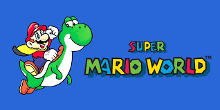
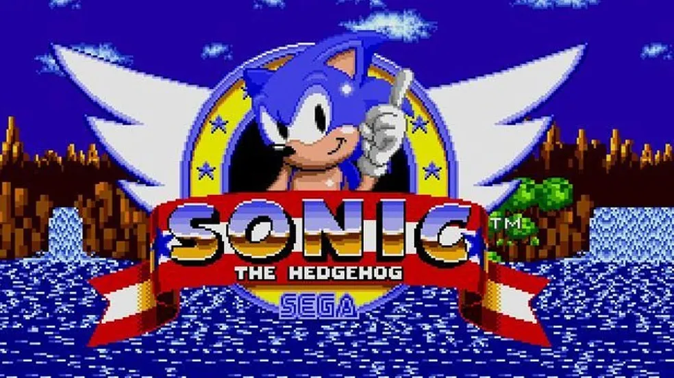
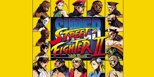
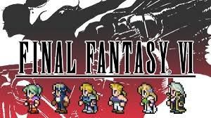

Super Mario World
Super Mario World marcou a infância de muitos com sua jogabilidade impecável e fases inesquecíveis.😃🍄

Sonic the Hedgehog
Sonic the Hedgehog conquistou milhões de jogadores com sua jogabilidade rápida e trilha sonora marcante.😃🎶

Street Fighter II
Street Fighter II não apenas definiu um gênero, mas também conquistou o coração dos fãs de jogos de luta.😃🎮

The Legend of Zelda: Ocarina of Time
Não apenas revolucionou o gênero de ação e aventura, mas também se tornou um marco na história dos videogames, conquistando corações de jogadores ao redor do mundo. 😍🎮

Final Fantasy VI
Não apenas redefiniu o gênero de RPG, mas também se tornou um épico atemporal que deixou uma marca profunda no coração dos fãs de videogames. 💫🎮